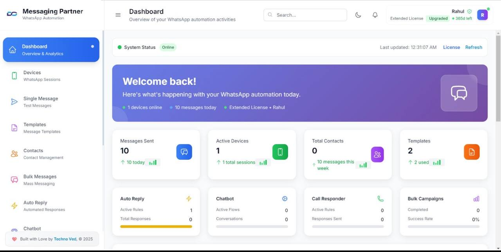

Lead Engine
Landing, formularios, anuncios y WhatsApp conectados para capturar prospectos sin perder datos.
- Formularios inteligentes
- Etiquetas por interés
- Alertas para ventas
S.I.S. - Special AI System
Integramos IA, CRM, WhatsApp, seguimiento automático y procesos comerciales en un solo sistema diseñado para aumentar conversiones, reducir carga operativa y ayudar a empresas a crecer con tecnología escalable.
Diagnóstico
La mayoría de negocios pierden oportunidades porque los mensajes se quedan sin responder, los leads no se clasifican, las citas se olvidan y nadie sabe qué seguimiento toca hacer. S.I.S convierte ese caos en un flujo claro: captura, califica, agenda, vende y reporta.
Sistemas principales
Cada módulo se puede instalar solo o combinarse como un sistema completo según el tamaño de tu negocio.
Landing, formularios, anuncios y WhatsApp conectados para capturar prospectos sin perder datos.
Asistente que responde preguntas, filtra clientes, recopila información y envía seguimientos.
Pipeline para ver en qué etapa está cada oportunidad y qué acción sigue.
Agenda conectada con confirmaciones, recordatorios y reprogramaciones automáticas.
Automatizaciones internas para inventario, tareas, aprobaciones, reportes y procesos repetitivos.
Panel para mirar leads, conversiones, actividad, citas, tareas pendientes y rendimiento.
S.I.S. enterprise systems
Tres sistemas diseñados para convertir procesos manuales en una operación inteligente, medible y preparada para escalar con IA.
Automatización esencial para negocios que quieren crecer con orden.
Mensualidad flexible según el tipo de negocio, volumen de clientes y nivel de automatización.
Negocios que reciben mensajes constantemente y necesitan responder más rápido, organizar leads y automatizar seguimiento sin montar una operación compleja.
Un negocio más rápido, organizado y preparado para convertir más clientes automáticamente.
Infraestructura automatizada de ventas para empresas en crecimiento.
Mensualidad diseñada según tus procesos, canales, volumen de leads y potencial de crecimiento.
Empresas que necesitan automatizar ventas, mejorar seguimiento y manejar más volumen de clientes sin perder control operativo.
Un sistema de ventas automatizado diseñado para aumentar conversiones y productividad.
El sistema operativo inteligente para empresas que quieren escalar con IA.
Mensualidad estratégica según departamentos, integraciones, soporte requerido y objetivos de escala.
Empresas que buscan automatizar operaciones completas e integrar departamentos y procesos.
Una empresa operando con infraestructura inteligente, automatizada y escalable.

Dashboard del sistema
Este panel resume el estado del sistema, dispositivos conectados, mensajes enviados, contactos, plantillas, respuestas automáticas, asistente IA, campañas y métricas básicas. Sirve para monitorear la operación diaria y ver rápido qué está funcionando.
¿Por qué S.I.S.?
Diseñamos sistemas inteligentes que automatizan ventas, seguimiento y operaciones completas. La meta es que tu negocio responda más rápido, mida mejor y opere con infraestructura seria.
Asesoría gratis
Déjame tu información y revisamos qué sistema necesita tu negocio, cuánto volumen manejas y por dónde se están perdiendo clientes.
Comparación rápida
Método
El objetivo no es instalar tecnología por instalar. Primero entendemos dónde se pierde dinero, después construimos el flujo y al final entrenamos al equipo para que lo use sin complicación.
Ideal para
Preguntas frecuentes
No. Podemos configurar uno desde cero o conectar el que ya usas.
No necesariamente. La IA atiende lo repetitivo y avisa cuando una persona debe intervenir.
Sí. Cada sistema tiene soporte mensual opcional para monitoreo, ajustes y mejoras.
Pro puede salir en 7-10 días. Premium y Prime dependen de integraciones y alcance.
Cotización
En la consulta revisamos tus canales, volumen de mensajes, proceso de ventas y herramientas actuales. Después te entregamos una cotización clara con el sistema recomendado.
S.I.S - Special AI System
Cotiza directamente con el fundador
WhatsApp personal: cotizar automatización +1 787 900 7688 contacto@specialaisystems.comAtención directa por WhatsApp o llamada personal para cotizaciones serias.